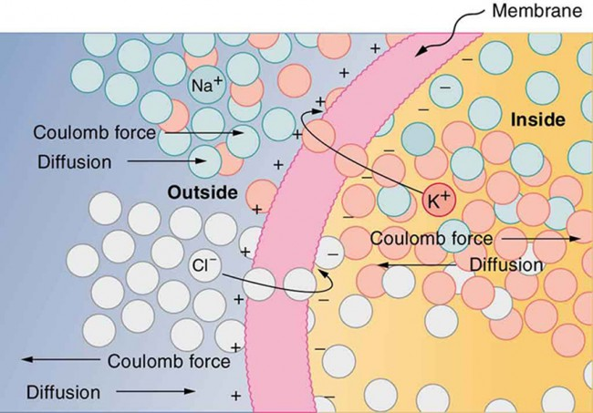
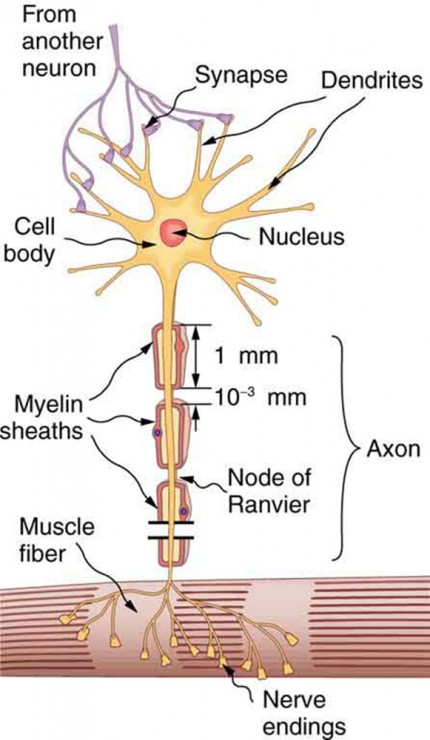

In this section potential-related issues are interpreted, and some fallacies discussed. The precise interpretation of the terms is crucial, so please read it carefully.
The potential as a basic quantity
The primary quantity when speaking about electric effects, is the charge. The frequently cited saying Cherchez la femme, used in the sense that "no matter what the problem, a woman is often the root cause". Our motto is similar: Look for the charge, meaning "no matter what the problem, some charge is often the root cause". Or, an attached side cause.
Whether speaking about physics or physiology, electric charge produces electric field, see Fig_EquipotentialSurfaces. The electrically charged carriers can be accumulated on a surface, and they form a potential surface, see also Figure Fig_MembraneAsCondensator.
Fallacy:
In neurobiology,
the shorthand notation such as that action potential is generated, travels, arrives, or action potentials travel down the axon by jumping from one node to the next, etc.
always means that the potential is accompanied with transmitting charge, although in many different envelopes, see also section
Neuronal signalling.

Electric charge and electric field
In neurophysiology, it is a common situation to have different compartments with different solved components in the compartments, separated by a selectively permeable membrane, such as in Figure Fig_TwoCompartmentsMembrane.

Two solution compartments separated by a selectively permeable membrane
Those solved components have dual properties: on one side they have, as chemical particles, a concentration (and may experience a chemical gradient) and on the other side an electrical charge (and may experience electrical gradient). That is, their behavior is under dual control: both the concentration gradient and the electric force will affect their motion (and their location in their stationary states). In addition, the membrane selectively permeable for the different solved components. This dual control accompanied with selective permeability on one side needs careful analysis and on the other side enables the "wonder of life". See also Energetics of Solute Diffusion.
The nice summary helps a lot in understanding role of voltages in biology. The case is not simple at all, both the active and passive mechanisms as well as and the allosteric effects influence what happens. If multiple ions and permeabilities are present, the Goldman-Hodgkin-Katz equation can be used to calculate the resting potential. Given that the relative membrane permeability of different ions are included, the potential surely changes if any of the channels closes/opens; that is, opening a channel alone, may start a rearrangement process, which can be described by a set of rather complex differential equations. In general, it is worth to visit site for physical explanation of less understood biological statements.
The membrane potential
The result of the mentioned two forces: charged components appear on the opposite surfaces of the (insulator) membrane: it will act as a condensator. Please keep in mind, that a stationary state is just a snapshot about the continuously changing systems: the life means permanent changing. As discussed in section Neuronal signalling, the membrane itself has its dynamic operation: both charging and discharging the membrane, complex electrochemical processes are going on on the surface and through the membrane.

Membrane as a condensator
Figure Fig_SemiPermeableMembrane shows that diffusion moves the K+ and Cl– ions in the direction shown, until the Coulomb force halts further transfer. This results in a layer of positive charge on the outside, a layer of negative charge on the inside, and thus a voltage across the cell membrane. The membrane is normally impermeable to Na+. The membrane potential is actually a difference of potentials measured between intracellular and extracellular sections of the organism. Several mechanisms maintain a small voltage or "potential" across the membrane in its normal or resting state, including pumps.

The semipermeable membrane of a cell has different concentrations of ions inside and outside
The action potential
One of the most important feature of the membrane's potential that it changes in a very specific way. Figure Fig_NeuronalActionPotential shows how an action potential runs in time, with separated phases. As our goal is to discuss only the details of operation our simulator relies on (this booklet does not have the ambition to be a textbook), all physically and biologically relevant details are left to discuss in the appropriate cited references. However, some fallacies are discussed, given that they are not consistently described in the different sources and may lead to confusion. First of all, always keep in mind that the charge produces electric field (and potential), including the action potential.

Different phases of the neuronal action potential
Initially, the membrane of the neuron is at its resting potential: the internal and external surfaces are covered with ions, see Figure Fig_SemiPermeableMembrane.
- A stimulus (delivering charge to neuron's input section) from a sensory cell or another neuron(s) (or experimenter's signal) causes the neuron to depolarize toward the threshold potential ("Triggering" phase); the neuron starts its "computing". In this phase the "operands" are delivered to the input section of the neuron (the computing unit). Triggering can be a slow process, even it can fail (the potential may drop back to resting potential, as leaking leads to loosing charge).
- If this excitation is successful (depending on the contributions of the stimuli and the "leaking" of the neuron's membrane), the membrane's potential reaches the threshold potential value (which corresponds to a threshold of the stored change), the neuron enters its "Charging" phase. Until it enters that phase, it is "computing". In the "Charging" phase, another mechanism comes into play: the membrane charges ("depolarizes") to its peak potential value (the yellow zone): it accumulates ions on its membrane. Important that the source of charge is different: no more charge arrives from its input section (its synapses). Computing is finished, the result is on its way to the output section, but not yet available. When that voltage (that is : that charge) threshold arrived, the result will be available for the external world.
- Again another mechanism starts to work: the membrane enters its "Discharging" phase and discharges ("repolarizes"): sends out the accumulated charge through its axon, in the form of charge train (spike; neural impulse).
- Due to some reason ("dumping" in the RC circuit model or opening other ion channel(s) in the electrochemical description) it can enter its phase "Overrun": the membrane potential drops below the resting potential ("hyperpolarization") and finally, it reaches again its initial phase: returns to its resting potential, and ready to process its cycle again.
The figure also shows some typical figures on its axes. Notice that the zero point of the time scale is at a point when the membrane potential becomes noticeably higher than the resting potential. Only the process ending up in "firing" is successful; the rests are "failed" are have not much interest for us.
Neuronal signalling
For an axion potential to communicate information to another neuron, it must travel along the axon (i.e. charge must be delivered) to the axon terminal. An overview of the signalling system is given here based on the figures and more detailed discussion. Figure Fig_NeuronWithDentrites shows that "signals in the form of electric currents reach the cell body through dendrites and across synapses, stimulating the neuron to generate its own signal sent down the axon. The number of interconnections can be far greater than shown here."

A neuron with its dendrites and long axon.
The conceptual (emprirical) action potential shown in Figure Fig_NeuronalActionPotential is repeated in Figure Fig_NeuronalActionPotential2; this time together with the rearrangements of ions across the cell membrane as shown. "Depolarization occurs when a stimulus makes the membrane permeable to Na+ ions. Repolarization follows as the membrane again becomes impermeable to Na+, and K+ moves from high to low concentration. In the long term, active transport slowly maintains the concentration differences, but the cell may fire hundreds of times in rapid succession without seriously depleting them."
Notice the rightmost inset, showing how the "long-term active transport" (beginning at the axon hillock) occurs; see also Figure Fig_NerveImpulse.

An action potential is the pulse of voltage inside a nerve cell
That is, we use here the definition that "The action potential is a voltage pulse at one location on a cell membrane,
that varies with time at the given location". This action potential gets transmitted along the cell membrane, and in particular down an axon, ain such a way that the changing voltage and electric fields affect the permeability of the adjacent cell membrane, so that the same process takes place there. The adjacent membrane depolarizes, affecting the membrane further down, and so on, as illustrated in Figure Fig_NerveImpulse. "Thus the action potential stimulated at one location triggers a nerve impulse that moves slowly (about 1 m/s) along the cell membrane. A stimulus causes an action potential at one location, which changes the permeability of the adjacent membrane, causing an action potential there. This in turn affects the membrane further down, so that the action potential moves slowly (in electrical terms) along the cell membrane. Although the impulse is due to Na+ and K+ going across the membrane (rather than along it), it is equivalent to a wave of charge moving along the outside and inside of the membrane, and correspondingly, generates a potential. This is a measurable effect (it is called along the axons the "travelling action potential"), but recall: it is caused by ion in- and outflux. In other words, the arrival of the action potential means the appearance of charge in the receiving neuron. At both ends ions are present inside the axon. Notice that the end of the axon terminal biology performs electronic to chemical transformation (initiates neurotransmitter release [4] for passing a synapse), in the opposite direction on the pre-synaptic and post-synaptic sides of the neuron. The details of that latter process is not relevant to our simulator; however, for a later time, remember that using neurotransmitters is a very important contribution to the learning ability.

A nerve impulse is the propagation of an action potential along a cell membrane
Some axons, like that in Figure Fig_NeuronWithDentrites, are sheathed with myelin, consisting of fat-containing cells. This arrangement gives the axon a number of interesting properties. Since myelin is an insulator, it prevents signals from jumping between adjacent nerves (cross talk). Additionally, the myelinated regions transmit electrical signals at a very high speed, much closer to as an ordinary conductor or resistor would (however, still orders of magnitude below that speed). There is no action potential in the myelinated regions, so that no cell energy is used in them. The signal is regenerated in the gaps, where the voltage pulse triggers the action potential at full voltage. So a myelinated axon transmits a nerve impulse faster, with less energy consumption. Again, for a later time, remember that making nerve impulses faster is a very important contribution to the learning ability.
Action potential as the result of the computing process
It was discussed in general in section Phases of computing that the computational process can be derived into four phases. Figure Fig_NeuronalActionPotential2 nicely shows how those phases are separated functionally in biology. The arrangement and ionic traffic clearly distinguishes the phases.
Initially, the neurons are in rest: there are K+ cells inside the neuron, Na+ ions outside. Correspondingly, the inside surface of the nerve cell is at a negative (intra-cellular) potential, the outside surface of the cell at a positive (extra cellular) potential. The forces are balanced; no driving force, no ionic movement: minimum energy consumption and no information transfer.
- Before computing, Na+ ions start to arrive from the outer world to (the presynaptic section portion of) to the cell, its input section. This phase corresponds to "transferring the operand to the computing unit". For the Na+ ions the membrane is semi-permeable, but by default the ionic gates are closed. This state ensures that accidental external changes (noise) will not initiate the machinery.
- The gates, however, are voltage-controlled: as the arrival of Na+ ions gets systematic (the arrival of a nerve signal gets noticeable), the channels get open, and the Na+ ions can enter the nerve cell. Their arrival changes the equilibrium of the internal state of ions inside the cell: the charge of the cell on the internal side of the membrane starts to increase. The arrival of the first such signal means the arrival of the first operand, that is, "the beginning of computing" (the failed initiation will not be separately discussed, but handled appropriately by the simulator).
- Given that the cell has different inputs and can receive neuronal signals independently, the charges contribute to the potential either constructively (excitatory) or desctructively (inhibitory).
- Recall that any change in the state of the system (such as gate's opening and ion's arrival in the intracellular fluid) destroys the equilibrium. The ions, under the different driving forces may diffuse (may move away from the surface, too) and so the potential may change. The membrane's internal potential may decrease naturally, continuously, due to diffusing away ("leaking") or receiving inhibitory input impulses from its synapses, and may increase due to receving excitatory impulses through its synapses. This complex process corresponds to "computing". Notice that neither the needed operands nor the length of the operation nor the result of the operation can be predicted. The neuron uses the possible input signals arriving at its inout section (synapses), and its internal state resources (synaptic strengths) by chance (but not randomly!). The neuron has a limited amount of input signal sources in its surrounding environment, does not know which of them actually participates in the game, and what will be its final contribution.
- The terminating condition (the event signalling the end of computation) is whether the membrane's potential, due to the result of the interplay of the processes mentioned, reached the critical voltage level. If yes, it terminates the phase computing (notice: even the result of the computing is not predictable: everything depens on the actual external and internal conditions).
- After receiving the terminating signal, the result is ready, but it is not yet available in the output section, it must still be delivered. On one side, the transfer of charges (ionic current) needs relatively large energy and the transfer must be as fast as possible: the next computing task may be in front of the door. On the other side, nature optimizes also energy comsumption, so the charge transfer shall be as slow as possible, but it must be sufficiently fast to perform its function.
- The result must be the same when the neuron starts to deliver it and when the other neuron receives it, and it must reflect the result valid at the time when computing terminated and the transfer process initiated. The cell has limited resources: it has one membrane (and so: one potential) only, that is the synaptic inputs arriving after initiating transferring the result are not any more effective. The cell can use only its internal resources: opens all possible Na+ gates and until its environment can provide more ions, increases its membrane's voltage recall, that ions must pass the membrane that needs time). At the point when the charge seems to the sufficient (the voltage exceeds firing threshold), the result is ready to be delivered (it takes some little time and serious energy loss to reach the axon hillock, the neuron's output section).
- Logically, the computing finished, and the neuron has two more tasks: one is to deliver the result to the next node in the chain and to restore its ability to make a second similar operation.
- Transmitting the result in form of a Fig_NerveImpulse happens at a locally different place: the axon takes over the task and delivers autonomously the generated charge to its destination (to the input section of the next node in the network).
- The task to regenerate the cell for the next computation of course happens at the same place: in the cell; the original concentration and membrane potential shall be restored, which takes some time. As the result of the present calculation is already on its way, and the result of the next calculation depends on the actual (time-dependent!) internal information plus the effect of its (time-dependent!) input (synaptic) information, the new calculation can begin immediately after this absolute refractory time. The membrane did not yet reach its resting potential, so the actual potential is the superposition of the past (quite short time) rest potential value superimposing on the newly acquired potential value.
- To speed up the operation of the neuron, the biology uses one more mechanism: when the membrans potential approaches it charging threshold, it opens one more ion channel. The rushing-in K+ ions effectively help to depolarize the membrane, and because of temporal effects, they even hyperpolarize it. The end result is that the membrane more quickly gets back to its resting potential, the relative refractory period will be shorter.
- These two latter processes can happen in parallel: triggering the next computation can already start, while restoring the initial state and recycling the used resources is still in course. The commonly used resource, the membrane, will show the superposition of the effects of both processes. There will be some contribution from the previous computation (that may also change the computing time of the second operation!) so the operation will be less accurate, but the operating frequence will be higher. This is again a role for the time in the neuronal computational process.
Fallacy:
Some sources mis-identify the absolute refractory period and put the beginning of the time scale to the point where membrane potential starts to noticeably deviate from the resting potential. The absolute refractory time is anatomically defined, while the excitation time depends on many factors, including timing relations of fellow (pre-synaptic) neurons and its own learning mechanisms. Adding this extra 'foreign' time slightly falsifies the value of the absolute refractory time, and throught that, also falsifies the value of the maximum firing rate. When making statistics in a living mechanism, this mis-identification naturally adds a "tail" contribution to the distribution of firing times, and its effect can lead to assuming tailed (log-normal) distribution where the correct interpretation would result in non-tailed (normal) distribution.
From the point of view of the simulator
From our particular point of view, the main point: charge is sent from sender (presynaptic) neuron's membrane and after a very sophisticated process, charge arrives to the receiver (postsynaptic) neuron's membrane.
 1.8.17
1.8.17 

{kind=link}